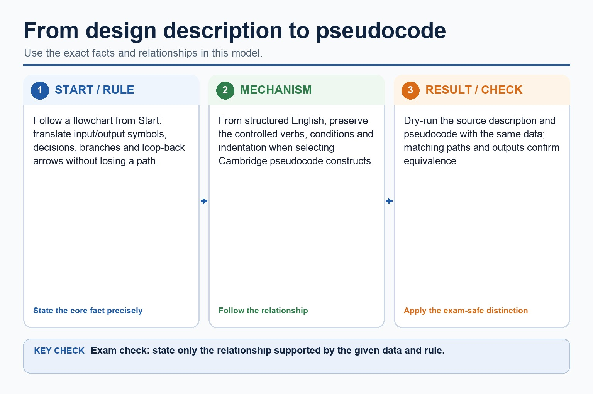
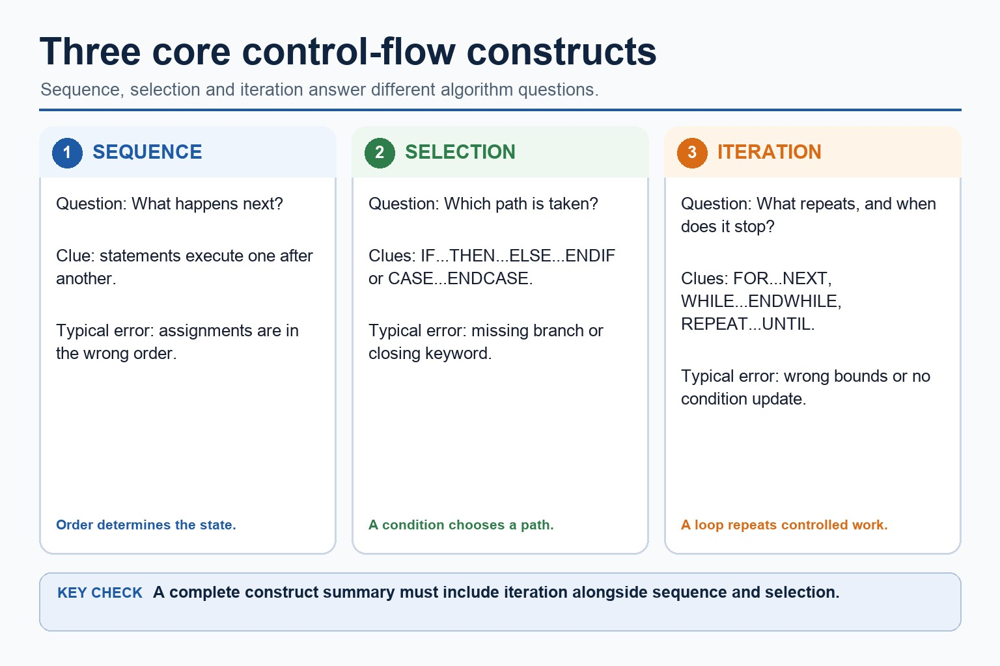

To translate a flowchart, follow arrows from Start, convert input/output symbols directly, convert diamonds into IF/CASE or loop conditions, and preserve every branch and reconnection. To translate structured English, identify its controlled verbs and indentation before selecting Cambridge constructs.
The answer must be Cambridge pseudocode, not Java: use assignment arrow, THEN/ENDIF, FOR...NEXT, WHILE...ENDWHILE or REPEAT...UNTIL as appropriate. Trace both versions with the same data to confirm equivalence.
Worked example: Flowchart sum loop
A flowchart sets Total to 0 and repeats input/add until Value = -1. Pseudocode uses Total <- 0; REPEAT; INPUT Value; IF Value <> -1 THEN Total <- Total + Value; ENDIF; UNTIL Value = -1; OUTPUT Total.
Translate a flowchart or structured English into pseudocode

Translate a flowchart or structured English into pseudocode: source-grounded visual explanation.
Lesson fact: Follow a flowchart from Start: translate input/output symbols, decisions, branches and loop-back arrows without losing a path.
Lesson fact: From structured English, preserve the controlled verbs, conditions and indentation when selecting Cambridge pseudocode constructs.
Lesson fact: Dry-run the source description and pseudocode with the same data; matching paths and outputs confirm equivalence.
Core syllabus practice
Translate descriptions into Cambridge pseudocode: apply and assess
Targeted practice
1. How is a flowchart decision normally translated?
Show answer
As a selection or loop condition, depending on where arrows reconnect.
2. What check confirms a translation is equivalent?
Show answer
Dry-run both with the same inputs and compare outputs/control path.
3. Should Java braces appear in a Cambridge pseudocode answer?
Show answer
No; use Cambridge keywords and terminators.
Exam-style question
4 marks
Translate this structured-English design into Cambridge pseudocode: input five temperatures; count those below zero; output the count.
Show MS
Answer
Guidance
Marks
initialises count to 0
Do not accept Java syntax such as int, braces or System.out as Cambridge pseudocode.
1
uses a five-iteration count-controlled loop with INPUT
1
tests Temperature < 0 and increments count
1
outputs count after the loop with coherent Cambridge syntax
Programs do three basic things: go next, choose, and repeat.
Sequence runs statements in order. Selection chooses between paths. Iteration repeats a block while a
condition or count controls it. That sounds small, until one missing ENDIF turns a calm algorithm into a
drama production with variables.
Identifysequence, selection and iteration in Cambridge pseudocode
Tracevariable values through control flow using test data
Writeclear pseudocode without leaking Java syntax into exam answers
SequenceLine 1, then Line 2
SelectionIF condition THEN
IterationFOR / WHILE / REPEAT
Control flow is the route map. The computer is very literal and has no scenic instincts.
Why this matters
Most Paper 2 algorithm questions combine these constructs, then test whether students can trace them accurately.
Common error
Do not describe every repeated action as iteration unless there is a controlling condition or count.
Warm-up hook
Find the tiny bug before it gets promoted
The pseudocode is meant to output Pass when Mark is at least 50. Which line causes the wrong boundary result?
Choose the line that fails when Mark is exactly 50.
Core constructs
Three control-flow ideas
Chinese support: sequence 顺序执行, selection 选择结构, iteration 重复/循环结构, trace 跟踪变量值。
Construct
Question it answers
Pseudocode clue
Typical error
Sequence
What happens next?
statements listed one after another
wrong order of assignment
Selection
Which path is taken?
IF...THEN...ELSE...ENDIF, CASE
boundary condition wrong
Iteration
How many times does this repeat?
FOR, WHILE, REPEAT...UNTIL
infinite loop or off-by-one
Three control-flow ideas

Three control-flow ideas: source-grounded visual explanation.
Lesson fact: Sequence answers what happens next and depends on statement order.
Lesson fact: Selection answers which path is taken and uses IF or CASE structures.
Lesson fact: Iteration answers what repeats and when repetition stops.
Lesson fact: FOR, WHILE and REPEAT are iteration forms with different controls.
Sequence
Order changes meaning
Correct order
INPUT Price
INPUT Quantity
Total <- Price * Quantity
OUTPUT Total
Wrong order
Total <- Price * Quantity
INPUT Price
INPUT Quantity
OUTPUT Total
A sequence is simple, but not optional. Using a value before it has been input is algorithmic optimism, not a method.
Order changes meaning
Order changes meaning: source-grounded visual explanation.
Lesson fact: Sequence
Lesson fact: Correct order
Lesson fact: INPUT Price
Lesson fact: INPUT Quantity
Lesson fact: Total <- Price * Quantity
Lesson fact: OUTPUT Total
Lesson fact: Wrong order
Lesson fact: A sequence is simple, but not optional. Using a value before it has been input is algorithmic optimism, not a method.
Selection
Conditions decide the path
IF selection
INPUT Mark
IF Mark >= 50 THEN
OUTPUT "Pass"
ELSE
OUTPUT "Resit needed"
ENDIF
CASE selection
CASE Grade OF
"A" : OUTPUT "Excellent"
"B" : OUTPUT "Good"
OTHERWISE OUTPUT "Check grade"
ENDCASE
Boundary tests matter: Mark = 49, 50 and 51 reveal whether the condition is correct.
Conditions decide the path
Conditions decide the path: source-grounded visual explanation.
Lesson fact: Use IF for a Boolean condition or range and close it with ENDIF.
Lesson fact: Use CASE for several discrete values of one expression and close it with ENDCASE.
Lesson fact: Test marks 49, 50 and 51 to verify the pass boundary.
Iteration
Loops repeat with control
Loop
Use when
Condition checked
Risk
FOR
number of repetitions is known
by counter range
wrong start/end value
WHILE
may repeat zero or more times
before each iteration
condition never changes
REPEAT...UNTIL
must run at least once
after each iteration
stops on the wrong condition
Loops repeat with control
Loops repeat with control: source-grounded visual explanation.
Lesson fact: A FOR loop uses a counter range and checks whether the next iteration is within its bounds.
Lesson fact: A FOR loop may execute zero times when its bounds are incompatible.
Lesson fact: A WHILE loop checks its condition before each iteration and may execute zero times.
Lesson fact: A REPEAT loop checks after the body and therefore runs at least once.
Trace method
Trace values in execution order
Pseudocode to trace
Total <- 0
FOR Count <- 1 TO 3
Total <- Total + Count
NEXT Count
OUTPUT Total
Trace table
Count
Total after update
1
1
2
3
3
6
Java support only
Same logic, different exam language
Cambridge-style pseudocode
IF Mark >= 50 THEN
OUTPUT "Pass"
ELSE
OUTPUT "Resit needed"
ENDIF